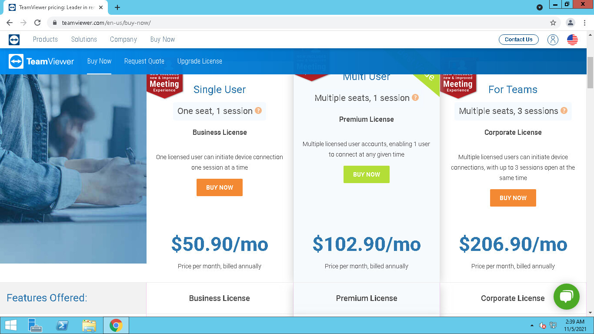
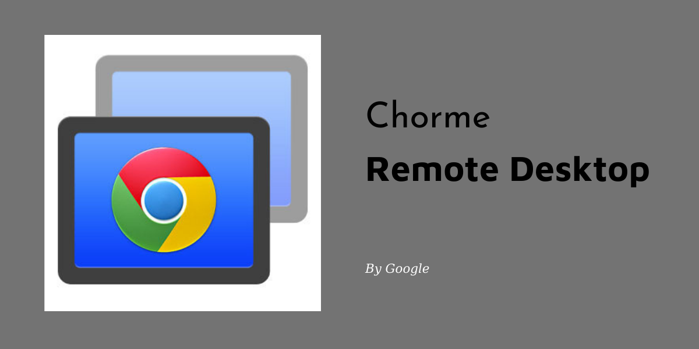
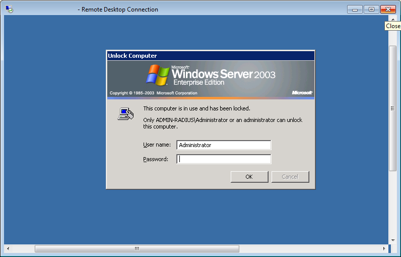
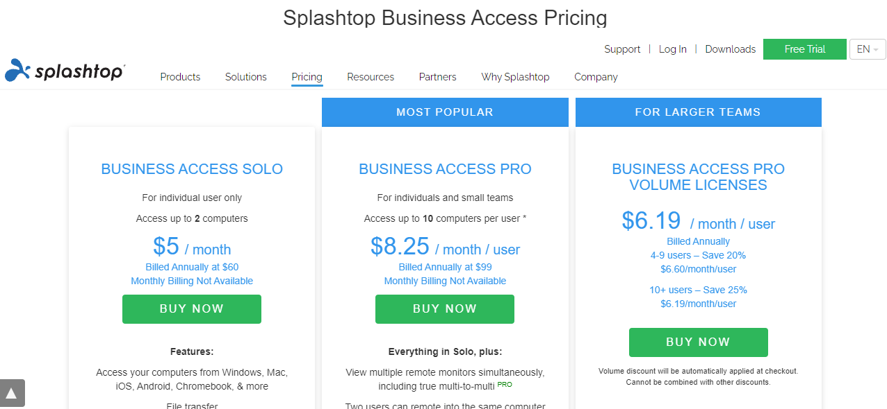
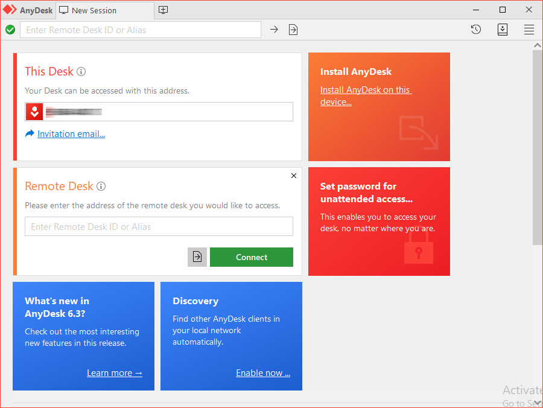
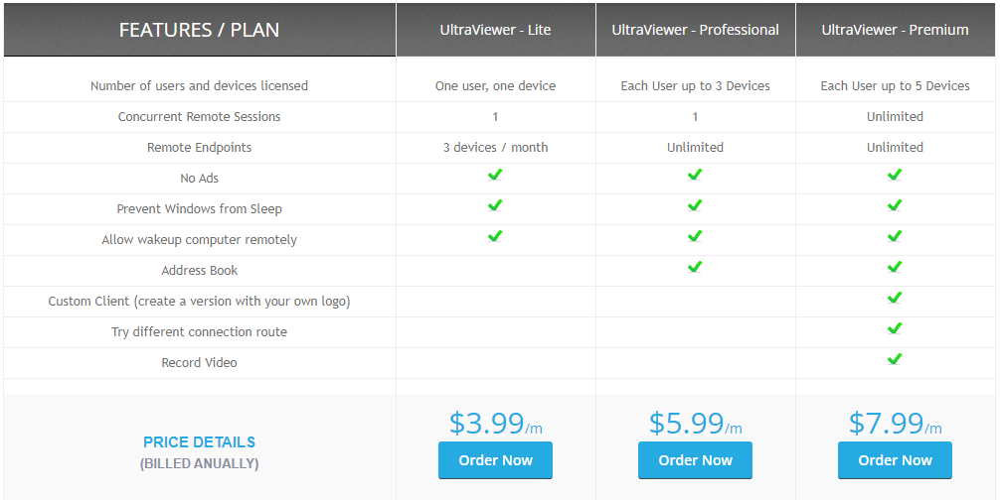

Top 5 best free Teamviewer Alternatives in 2026
In recent years, due to the impact of the pandemic and the remote work trend becoming popular globally, the demand for remote desktop control is increasing. However, instead of TeamViewer software that is quite popular with most users, are there any similar solutions to help support your work? Here are the Top 5 best TeamViewer alternatives free in 2026.
1. WHY DO YOU NEED THE TEAMVIEWER ALTERNATIVE FREE SOFTWARE?
TeamViewer is known as a software that allows you to remotely access and control the desktop of your computers and servers from anywhere. Using TeamVewer, you can easily share the files, share screen, exchange information, and organize webinars without face-to-face meeting.
Besides, TeamViewer is also compatible with all popular operating systems such as Windows, Chrome OS, Linux, MacOS, IOS, Android, ect; It can be installed on computers and mobile devices to facilitate the use process.
Although it brings a lot of benefits, this software also makes many users feel annoyed and need free alternatives to TeamViewer for some of the following reasons:
TEAMVIEWER FREE VERSION IS NOT STABLE
Although TeamViewer provides a free version available for individual users for non-commercial purposes, the TeamViewer Free version does not always provide a pleasant experience for users.
In fact, you can often get the limit of usage time and disconnection - suddenly losing connection every 5 minutes, which causes inconvenience and difficulty when you are online. This can happen even if your internet connection is still working perfectly.
In addition, after a period of use, free customers are often confused by the system as commercial users and receive a notice that asks for a fee to continue using. You will probably receive a notification from TeamViewer saying " Connection blocked after timeout..." and "Unfortunately, we will have to limit your usage of TeamViewer because the usage pattern suggests that you have been supporting others professionally. To continue using Teamviewer, please subscribe to a license plan"
HIGH COST FOR PAID TEAMVIEWER VERSION
High cost is a barrier that makes it difficult for many enterprise customers to access premium versions of Teamviewer.

Compared to softwares with the same features on the market, the Teamviewer fee is quite expensive and not comfortable for individual users with commercial purposes and small and medium-sized enterprises. You can absolutely find Teamviewer alternatives free or pay others, but its cost is much easier to accept.
You can view detailed information about the licensing packages in the article TeamViewer Pricing.
THE WAKE-ON-LAN FEATURE IS DIFFICULT TO USE
To be able to turn the remote computer on when it is turned off or asleep using Teamviewer software, you need to set up a series of complex operations as follows:
- The remote computer hardware must support the Wake On Lan feature
- Change BIOS and network card settings
- Using Teamviewer account to make remote desktop connection
- Set up an intermediate computer located on the same network as the remote computer to wake up when needed.
Therefore, to use the Wake On Lan feature, you need a little technical knowledge to turn on the computer remotely. In particular, the use of an intermediate computer is considered quite cumbersome and troublesome. You can easily turn on the remote computer with other Teamviewer alternatives free.
TRANSFER DIFFICULTY FILES WITH TEAMVIEWER
Many customers report that they often face many limitations when sharing large files via TeamViewer.
This can take a long time, sometimes the file transfer crashes and cannot be done. If you are in a meeting or webinar with your clients, the delay in file transfer will cause a lot of discomfort to your partner and affect your work progress.
SOME OTHER REASONS
And these are some common reasons why users abandon TeamViewer and look for free alternatives to it.
- Large files up to 33 MB can slow down download and installation speed on the device.
- It is difficult to open the chat box. Some customers find it difficult to read the font of Teamviewer. There is no feature to view chat history.
- Security issues are still at risk ...
2. TOP 5 BEST FREE TEAMVIEWER ALTERNATIVES IN 2026
If you are facing many limitations and difficulties as above, you can refer to some following free Teamviewer alternative software for more optimal choices:
| Software | Platform Support | Basic Remote Access | File Transfer | Chat Box | Multi-Session Support | Wake-on-LAN | Free Version | Paid Version (USD) |
|---|---|---|---|---|---|---|---|---|
| UltraViewer | Windows | ✔ | ✔ | ✔ | ✔ | ✔ | ✔ | From $47.88/year |
| Chrome Remote Desktop | Windows, Mac, Linux | ✔ | ✘ | ✘ | ✘ | ✘ | ✔ | None |
| Windows Remote Desktop | Windows | ✔ | ✘ | ✘ | ✘ | ✘ | ✔ | None |
| Splashtop Remote | Windows, Mac, Linux, iOS, Android | ✔ | ✔ | ✘ | ✔ (paid version) | ✘ | ✔ (local only) | From $16.99/year |
| AnyDesk | Windows, Mac, Linux, iOS, Android, FreeBSD | ✔ | ✔ | ✘ | ✘ | ✔ | ✔ (limited) | From $119/year |
CHROME REMOTE DESKTOP
Chrome Remote Desktop is a free remote desktop software dedicated to computers using the Chrome browser or Chromebook. With this remote software you can easily connect two computers in the same network.

Chrome Remote Desktop is connected and works on many operating systems such as: Windows, Mac OS, Linux, etc. You just need to download it for the computer platform of your choice, launch it and follow the instructions to set it up.
The biggest advantage is its high applicability and ease of operation, even if you don't have knowledge about technology. However, Chrome Remote Desktop also has many limitations such as no chat box, no file sharing, no support for printing remote files to local printers.
If your needs are simply remote desktop access and basic supports, don't miss this free TeamViewer alternative.
WINDOW REMOTE DESKTOP
Window Remote Desktop is Windows' built-in remote desktop control tool. If you are using Windows operating system and looking for a free, stable, safe Teamviewer alternative, this is what you need.

It is available in the Windows operating system, so its compatibility is good. You do not need to install it and still can use it easily. The speed of controlling the computer is so fast because it does not have to use another company's server.
Because of this reason, you will face many difficulties and limitations to use the remote computer control function using this software. With Windows Remote Desktop, you can only control your computer when it is logged off. This means that if you want to support someone, you will have to ask them to log off and then give you their IP address and Windows account before you control their computer. Obviously you can't use it for customer support!
SPLASHTOP REMOTE
Splashtop Remote is one of the best free TeamViewer alternatives today. With Splashtop Remote, you can easily control and access your computer remotely with other mobile devices such as tablets, phones even if you are not at home or work!

Splashtop supports very well for devices using popular operating systems such as Windows, iOS, Android, Linux, MacOS or Windows Phone. Splashtop allows completely free use for individuals on the local network. If you want to access computers from another network, you need to buy Anywhere Access Plan for $4.99/month or $16.99/year which allows you to access remote computers from anywhere on the Internet.
In addition, if your need requires more features, Splashtop has a variety of service packages such as Business Solo ($60/year), Business Access Pro ($99/year),...
One of the biggest advantages of Splashtop is the screen refresh feature and the ability to transfer audio and video remotely very well. If you are working in the education industry and want to create a virtual classroom that is easy to control, this is also a great choice to refer to.
ANYDESK
Anydesk is a familiar remote control software and has gradually become a formidable counterpart of Teamviewer in recent years. Currently, AnyDesk deploys 4 versions including Free, Lite, Professional and Enterprise. The price for the paid versions is $ 119, $ 239 respectively and you need to contact directly for the business version.

In the same way as Teamviewer, Anydesk is supported on a variety of platforms such as: Windows, macOS, Linux, Android, FreeBSD, iOS, ect. If you are an individual user, Anydesk is a free alternative to Teamviewer and extremely effective software. Some outstanding advantages can be easily viewed in Anydesk such as:
- Fast and compact file and audio transfer feature
- Allow users to customize the image quality and delay rate when controlling the client's computer
- Install and operate simply. You don't need to register, just download and use it
- Its capacity is much lighter than Teamviewer's and it is easy and convenient to operate
- Automatically update new software versions ...
However, AnyDesk has different designs from TeamViewer, which turns into a drawback that users do not want to switch to if they are used to TeamViewer. For example, a small screen frame is more difficult to observe than TeamViewer. Or every time you connect to your partner, your partner needs to click allow to accept your connection, and unfortunately during the control process, if you lose connection, you have to contact your partner, which takes a long time.
Moreover, Anydesk's remote booting feature is as difficult to use as TeamViewer. It should be noted that Anydesk has gradually limited the free version recently when issuing notices of claims on computers that make more than 15 connection times in 6 weeks. This is one of the AnyDesk Free License Limitations that make users search for alternative options more and more
ULTRAVIEWER - THE BEST FREE TEAMVIEWER ALTERNATIVE IN 2026
As a new software launched on the market not long ago, UltraViewer promises to bring a new revolution in the field of remote computer control and support. UltraViewer possesses many outstanding advantages and deserves to be the best free TeamViewer alternative in 2026.
THE CHEAPEST FEE
If you are an individual user with little need for non-commercial use, you can experience UltraViewer software with a completely free version. You will not encounter any problem such as limited use number, disconnection, notice asking for payment, ect. UltraViewer offers the same service as Teamviewer when using the free version.

If you are an individual or business that often needs to use remote desktop software for work, the paid versions of Ultraviewer are extremely cheap and easily affordable.
The paid versions currently being deployed by Ultraviewer include Lite, Professional and Premium with the most competitive and cheapest fee in the market at 47.88 USD, 71.88 USD, 95.88 USD/year, respectively. If you have a limited budget and need to maximize savings, UltraViewer is the best solution for you.
FREE UPGRADE
Instead of Teamviewer, which is still charging to upgrade to new versions, UltraViewer allows you to upgrade for completely free. You will experience new, superior and more advanced features of the update version without worrying about the cost. Ultraviewer will help optimize the budget.
EASY TO TURN ON COMPUTER REMOTE (WAKE ON LAN)
To use the remote desktop feature via TeamViewer, you need to set up a series of complex operations and it is necessary to have an intermediate computer involved in this process.
No hassle like Teamviewer, UltraViewer allows you to do Wake On Lan easily in just a few minutes at any time with pre-set settings. It is a great feature to be the best free Teamviewer alternative software 2026.
SIMULTANEOUS REMOTE CONNECTIONS AT THE SAME TIME
For the most advanced version of UltraViewer Premium, you can control remote computers at the same time and simultaneously support two, three, or five customers and even more. This keeps your work flowing, and you can support more and act less.
With UltraViewer, you have the freedom to control without worrying about limitations or extra fees like TeamViewer.
EASY INSTALLATION AND OPERATION
UltraViewer has a friendly interface from installation step to connection step and it is easy for you to use, and suitable for all computer users.
In addition, Ultraviewer also overcomes some shortcomings of TeamViewer software such as an easy-to-see chat box design, convenient for supporting many people at the same time, quick file transfer, high security - safety, ect.
Currently, Ultraviewer only supports Windows operating systems and will be further upgraded in the near future. Please Download UltraViewer to experience the best free TeamViewer alternative software.


Write comments (Cancel Reply)